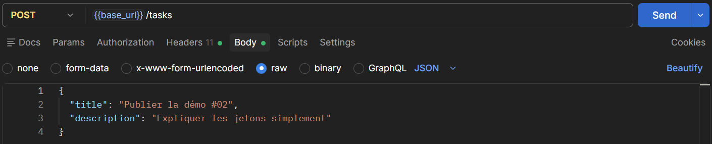
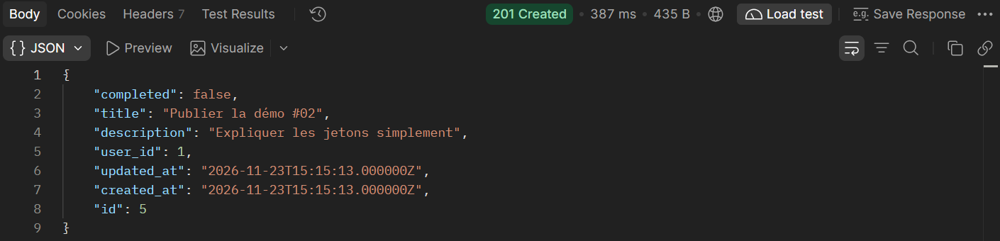
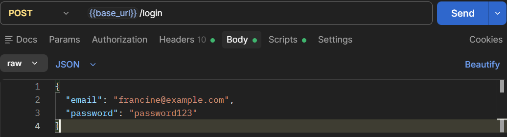
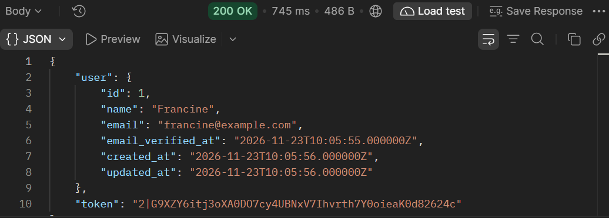
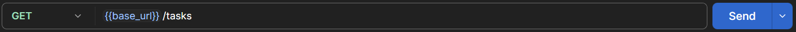
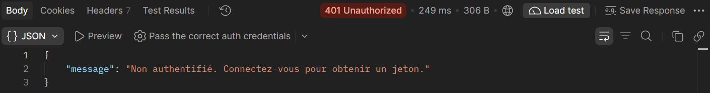
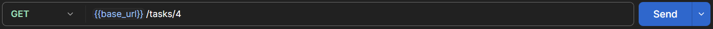
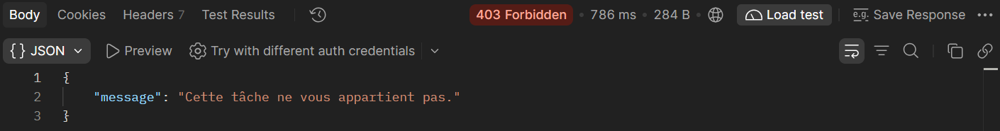

Démonstration #02 · De la théorie à la pratique
Sécuriser une API : l'authentification
Dans la démo #01, n'importe qui pouvait lire et supprimer toutes les tâches. Aujourd'hui, chacun ne touche qu'aux siennes.
Laravel 13SanctumJetons
Policies401 vs 403PHPUnit
# Les 3 questions de cette démo
1. Comment l'API sait-elle qui je suis ?
2. Comment m'empêcher de toucher aux tâches des autres ?
3. Quelle différence entre 401 et 403 ?
Le principe
Un jeton, c'est un badge d'accès
Une API ne se « souvient » de personne. Plutôt que de redonner son mot de passe à chaque requête, on reçoit un jeton une fois, puis on le montre.
1
Je me connecte POST /api/login
J'envoie mon e-mail et mon mot de passe.
2
L'API me donne un jeton "2|G9XZ…"
Une longue chaîne secrète, enregistrée en base.
3
Je le montre à chaque requête
Authorization: Bearer 2|G9XZ…
4
Je me déconnecte POST /api/logout
Le jeton est détruit : il ne marchera plus jamais.
Le mot de passe est chiffré en base et n'est jamais renvoyé par l'API.
La notion clé
Authentification ≠ Autorisation
Deux mots qui se ressemblent, deux questions différentes, deux codes HTTP différents.
401
« Qui es-tu ? »
Authentification. Pas de jeton, ou un jeton invalide : l'API ne sait pas qui tu es.
🏢 Tu n'as pas de badge : tu ne rentres pas dans l'immeuble.
403
« As-tu le droit ? »
Autorisation. L'API sait qui tu es, mais cette tâche appartient à quelqu'un d'autre.
🚪 Tu as un badge, mais ce n'est pas ton bureau.
Un bon code d'erreur dit exactement au client ce qui ne va pas : se connecter (401) ou renoncer (403).
Étape 1 · Le code
Un gardien devant les routes
routes/api.php// Publiques : pas besoin d'être connecté
Route::post('login', [AuthController::class, 'login']);
// Protégées : jeton obligatoire, sinon 401
Route::middleware('auth:sanctum')->group(function () {
Route::apiResource('tasks', TaskController::class);
});
app/Http/Controllers/Api/AuthController.php// Même message si l'e-mail OU le mot de passe est faux :
// on ne révèle pas quels e-mails existent.
if (! $user || ! Hash::check(…)) {
// "Identifiants incorrects."
return response()->json([…], 401);
}
$token = $user->createToken('api')->plainTextToken;
Le middleware est un gardien posté devant les routes : il vérifie le jeton avant que le contrôleur ne s'exécute.
Étape 2 · Chaque tâche a un propriétaire
Chaque tâche a son user_id
app/Models/User.php · TaskController.php// Un utilisateur possède plusieurs tâches
return $this->hasMany(Task::class);
// Créer VIA la relation : user_id est rempli tout seul
$request->user()->tasks()->create($data);
Je n'envoie pas de user_id…

… l'API l'ajoute elle-même

Étape 3 · L'autorisation
Une règle, écrite une seule fois
Une Policy regroupe les règles d'accès dans un seul fichier.
app/Policies/TaskPolicy.phppublic function manage(User $user, Task $task): Response
{
return $user->id === $task->user_id
? Response::allow()
: Response::deny(
'Cette tâche ne vous appartient pas.');
}
app/Http/Controllers/Api/TaskController.phppublic function show(Task $task)
{
// Pas ma tâche ? Laravel s'arrête ici et répond 403
Gate::authorize('manage', $task);
return response()->json($task);
}
La même ligne protège afficher, modifier, terminer et supprimer.
Tester avec Postman
✓ Je me connecte
J'envoie mes identifiants

L'API me répond avec un jeton

Pas de password dans la réponse : il est masqué par le modèle. Postman enregistre le token tout seul pour les requêtes suivantes.
Tester les refus
✗ Sans badge, ou pas mon bureau
Sans jeton → 401


Connectée, mais la tâche n°4 est à Alex → 403


Les deux refus sont en JSON et en français, sans aucun détail technique sur le serveur.
Ce que j'ai appris
Mes tests passaient… et pourtant il y avait 2 bugs
🐛 Sans jeton → erreur 500 au lieu de 401
Sans le header Accept: application/json, Laravel essayait de rediriger vers une page de connexion… qui n'existe pas dans une API.
🐛 Le 403 affichait la trace interne du serveur
Noms de fichiers, numéros de ligne : des informations qu'un attaquant ne doit jamais voir.
Je les ai trouvés en testant à la main, corrigés, puis j'ai ajouté un test pour que ça ne revienne jamais :
PASS Tests\Feature\AuthTest
✓ sans jeton les taches sont inaccessibles
✓ sans jeton ni header accept on recoit quand meme un 401 json
✓ parcours complet avec un vrai jeton
PASS Tests\Feature\TaskApiTest
✓ on ne peut pas toucher a la tache d un autre
…
Tests: 17 passed (55 assertions)
À retenir
3 leçons de cette démo
1
401 et 403 ne disent pas la même chose
401 : « qui es-tu ? » · 403 : « tu n'as pas le droit ».
2
Le serveur décide, jamais le client
Le propriétaire d'une tâche vient du jeton, pas des données envoyées.
3
Les tests automatiques ne suffisent pas
Un vrai essai en conditions réelles a révélé 2 bugs.
🔗 Le code complet est sur GitHub (lien en commentaire)
💬 Démo #03 : lancer toute l'API avec Docker ? Dis-moi en commentaire !
♻️ Partage si ça peut aider quelqu'un qui apprend